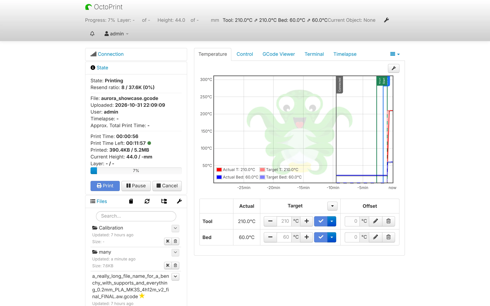
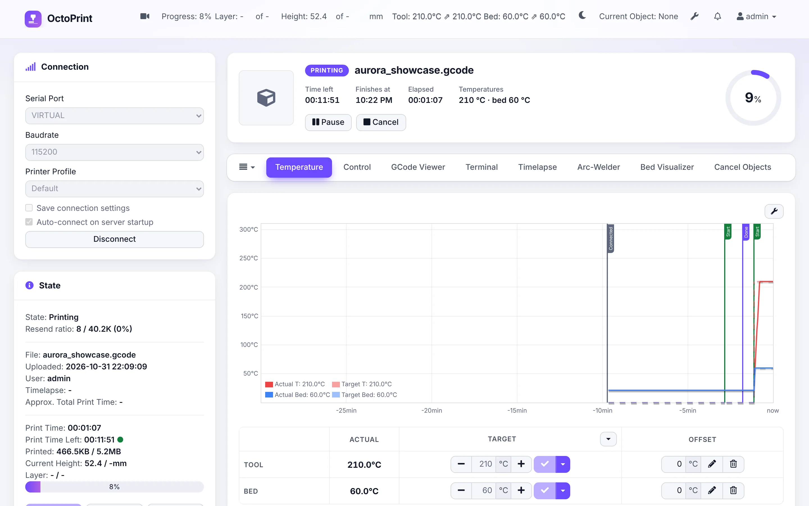
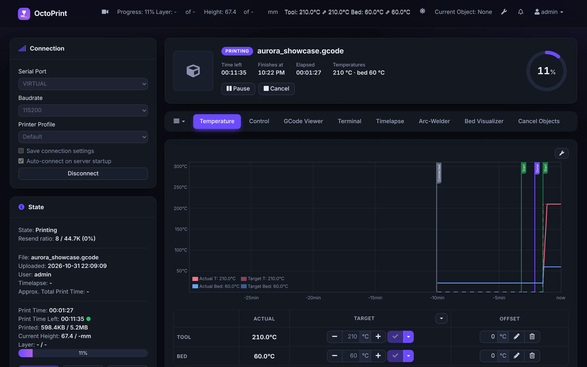

Your printer deserves a beautiful interface.
Aurora UI redesigns OctoPrint from top to bottom: light and dark themes, your own accent color, a print status card, a floating webcam, a smarter terminal and a real phone layout. Nothing to relearn, every plugin keeps working.



Drag the handle: the same page during the same print, stock on the left, Aurora on the right. The site's theme switch shows Aurora in light or dark.
Everything you look at, made better
A theme first, and a handful of tools that make printing easier, each one can be turned off.
Light, dark or automatic
Follows your system, or pick per browser with the moon/sun button. Graphs and the GCode viewer follow too.
Your accent color
Nine presets or any color. Text always stays readable, and a color too close to the background gets a visible shade automatically.
Print status card
Thumbnail, progress ring, time left, finish time, layer and temperatures, with Pause and Cancel at hand.
Floating webcam
Stays on screen on every tab. Drag it, resize it with a finger, double-click for full screen, or pop it out in picture-in-picture.
A smarter terminal
Colored G-code, your recent commands one click away, and favorites like G28 or M84 as buttons.
File grid with thumbnails
See your models instead of file names. Click, or Tab and Enter, to load one.
Your layout
Hide and reorder sidebar panels and tabs, with a live preview. Folded panels stay folded.
A real phone layout
OctoPrint shows phones a shrunken desktop page. Aurora gives them a proper one-column layout.
Print alerts
A chime or a browser notification when a print finishes, fails, or pauses for a filament change. Your own pauses stay quiet.
Touch screen mode
A density with 44px buttons, fields and tabs, for the tablet or touch screen next to your printer.
Custom CSS
Fine-tune anything with your own rules, using the theme's color variables, previewed as you type.
Light on your Pi
About 5% of CPU over stock OctoPrint while printing, and the webcam pauses when nobody is looking.
Up and running in a minute
Like any OctoPrint plugin. Updates then arrive through OctoPrint's own Software Update.
Open the Plugin Manager
In OctoPrint: Settings › Plugin Manager › Get More…
Install from this URL
Paste it in … from URL and click Install.
https://github.com/Limoniak/OctoPrint-Aurora/archive/refs/heads/main.zipRestart and reload
Restart OctoPrint when asked, reload the page, and pick your colors in Settings › Aurora UI.
Prefer the command line? In OctoPrint's Python environment:
pip install https://github.com/Limoniak/OctoPrint-Aurora/archive/refs/heads/main.zipPlays well with your plugins
Tested on OctoPrint 1.11.8 with the most used plugins and a real fourteen-plugin setup.
Most used plugins
Everyday setups
Browsers and languages
Tested in Chrome and Edge, desktop and phone. Built on CSS supported by Firefox 113+ and Safari 16.2+. Interface in English, French, Spanish, Portuguese, Russian, German and Italian.
Questions
Does Aurora change how OctoPrint works?
No. It only changes how things look and adds optional tools. Every OctoPrint feature stays where it was, and plugins keep working.
How do I go back to the stock look?
Untick Enable the Aurora theme in Settings › Aurora UI: the stock interface is back instantly, no restart. Uninstalling works like any plugin.
Will it slow down my Raspberry Pi?
Aurora runs in your browser, not on the Pi. Measured with a browser slowed down four times during a long print, it adds about 5% of CPU time to stock OctoPrint. The floating webcam pauses its stream when the page is hidden, which saves the Pi's bandwidth.
I use UI Customizer, TouchUI or Themeify
UI Customizer is fully supported: it keeps its layout and Aurora provides the colors. Aurora steps aside in browsers where TouchUI is active. Themeify is another full theme, so Aurora warns you to keep only one.
Is it accessible?
Text contrast meets WCAG AA in both themes on every OctoPrint page, focus is visible, and Aurora's own tools work with the keyboard and screen readers.
Is it free?
Yes, free and open source under the AGPL-3.0 license, like OctoPrint itself. Issues and pull requests are welcome on GitHub.
Give OctoPrint a fresh look tonight
One URL in the Plugin Manager, one restart, and your printer has a new interface.
Install Aurora UI